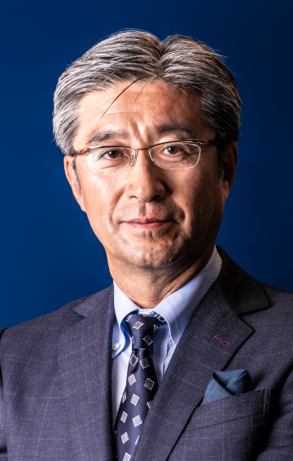

8.25（金）11：30～12：00
Siliconomyと３つのフォーカス
インテル
代表取締役社長
鈴木 国正 氏
日本のデジタル社会へのトランスフォーメーションを促進し強い日本（シン・ニッポン）を支えるためのビジョンと、AIやテクノロジを含めたインテルのフォーカスポイントを、半導体メーカー独自の目線でご紹介致します。また、変化を遂げるにあたり、避けては通れない課題と方策についての提言も交えて、変革の全体像の意思統一を図り、聴講者の皆様と共にシン・ニッポンを切り拓く礎になるような知識の共有の場となるような講演を行います。